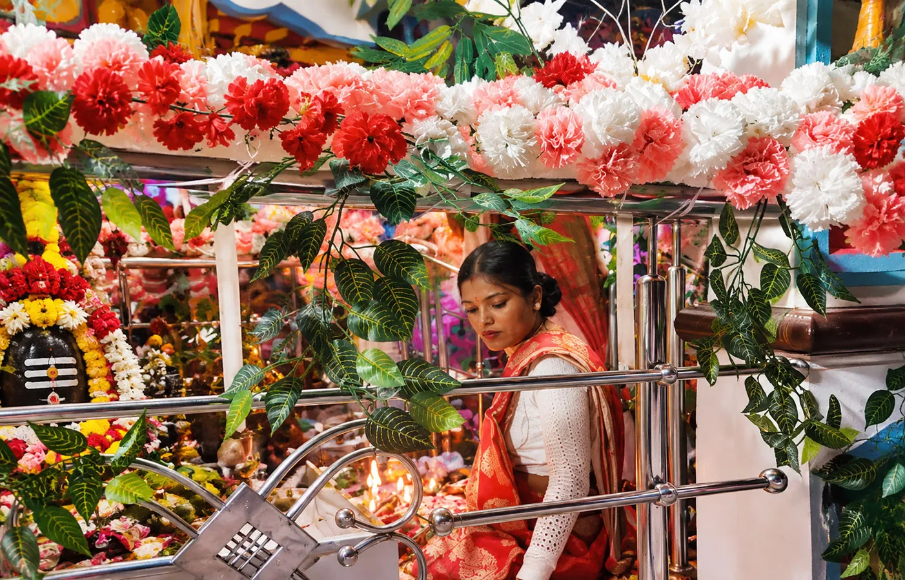
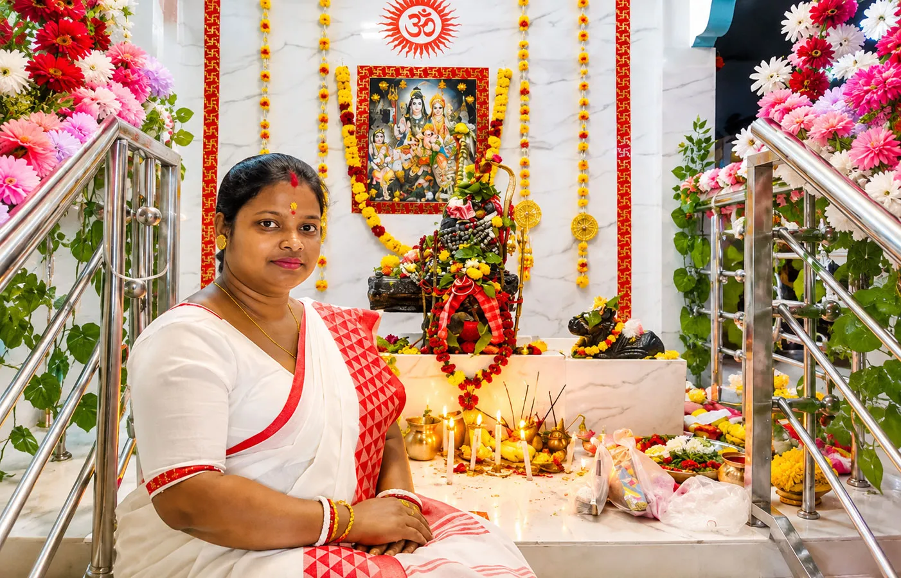
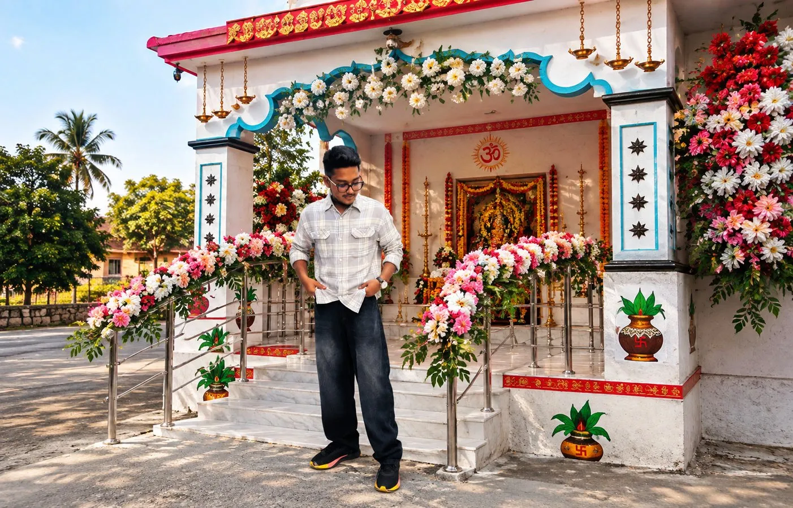
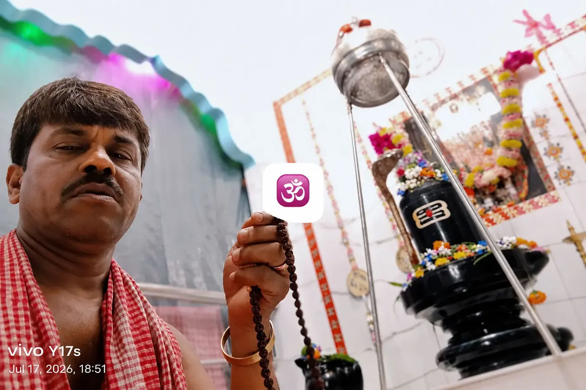
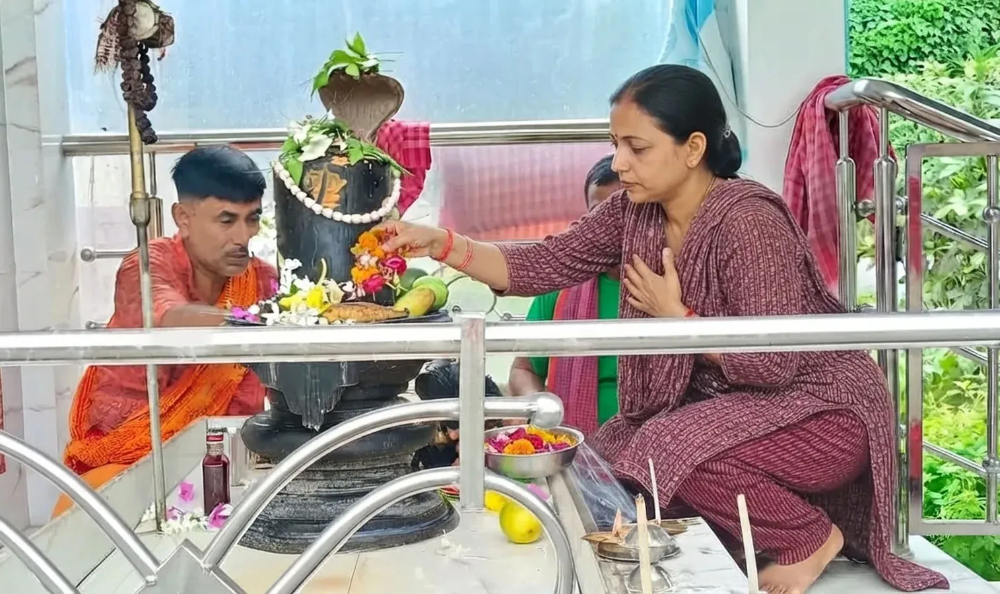
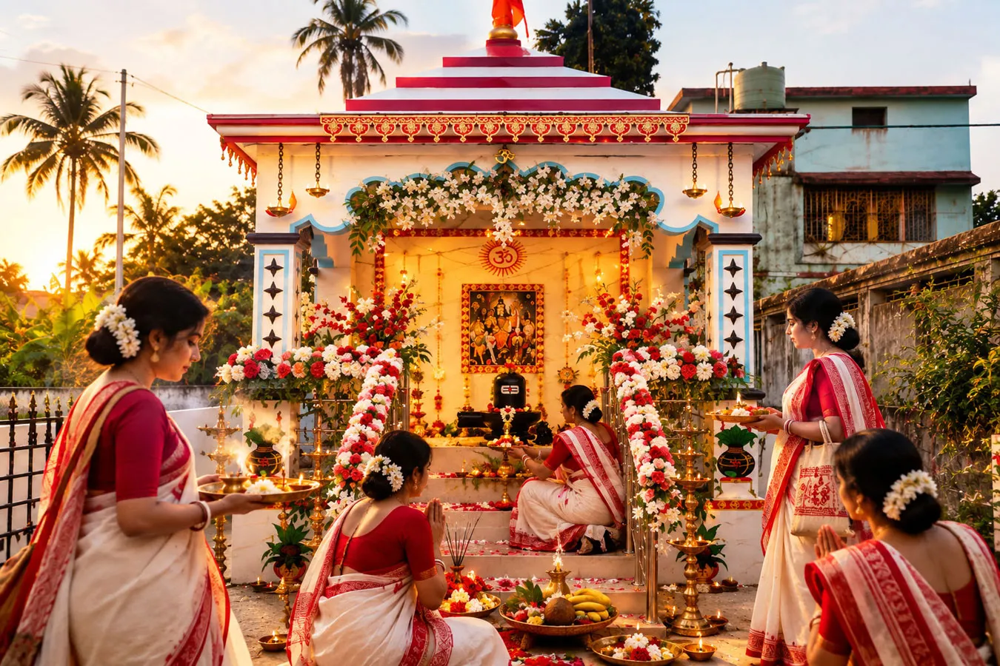
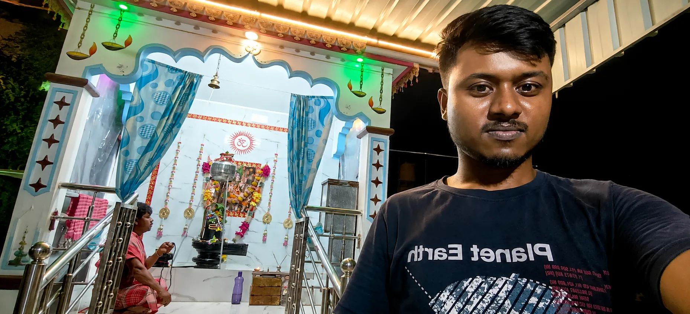

शाम 5:30 बजे पूजा का आरंभ हुआ

शाम लगभग 5:30 बजे पूजा का आरंभ हुआ। मंदिर बन चुका था, लेकिन हमारे लिए मंदिर का वास्तविक जीवन पूजा और भक्ति के साथ शुरू होना था। मंत्रों की ध्वनि शुरू हुई और दिन भर की भागदौड़ जैसे धीरे धीरे पीछे छूटने लगी।
उस रात चारों पहरों की पूजा शास्त्रानुसार संपन्न की गई। एक पहर बीता, फिर दूसरा, फिर तीसरा और फिर चौथा। रात धीरे धीरे आगे बढ़ती रही और पूजा लगभग सुबह 4:00 बजे तक चली।
हम यहाँ तक पहुँच गए थे।
३०० से अधिक भक्त और प्रसाद की सेवा

उस दिन हमारे सामने एक और बड़ी जिम्मेदारी थी। 300 से अधिक भक्तों के लिए प्रसाद तैयार किया गया। इतने लोगों के लिए प्रसाद तैयार करना केवल रसोई का काम नहीं होता। उसमें समय, व्यवस्था, लोगों की मेहनत, धैर्य और सबसे बढ़कर सेवा की भावना चाहिए होती है।
जब प्रसाद भक्तों के बीच पहुँचा और हमने लोगों को उसे ग्रहण करते देखा, तो दिन भर की भागदौड़ कुछ देर के लिए पीछे छूट गई। हमारे पास उस समय का वीडियो भी है। वह हमारे लिए उस दिन की सेवा और भक्तों की उपस्थिति की एक जीवित स्मृति है।
हर खुशी के बीच एक कठिन क्षण भी आया
लेकिन जीवन की तरह वह दिन भी केवल सुखद स्मृतियों से नहीं बना था। पूजा के बीच एक व्यक्ति नशे की अवस्था में ऐसी परिस्थिति पैदा करने लगा, जिससे पूरे आयोजन का वातावरण प्रभावित होने की आशंका बनने लगी। उस समय सबसे बड़ी चिंता थी कि पूजा का क्रम किसी भी तरह बाधित न हो।
हमने परिस्थिति को शांतिपूर्वक संभालने की कोशिश की। जितना संभव था उतना संयम रखा गया और अंततः पूजा अपने क्रम से चलती रही। कई भक्तों ने बाद में अपनी नाराज़गी भी व्यक्त की। पुजारी भी उस व्यवहार से अप्रसन्न थे। फिर भी हमने उस समय विवाद को बढ़ाने के बजाय पूजा को पूरा करना चुना।
क्योंकि उस रात हमारे लिए सबसे बड़ा विषय कोई व्यक्ति नहीं था। भोलेनाथ थे।
कुछ चोटें समय के साथ भी पूरी तरह नहीं मिटतीं
बाहर से देखने पर शायद वह घटना छोटी लगे। लेकिन मन हर बात को इतनी आसानी से नहीं भूलता, विशेषकर तब जब चोट किसी ऐसे व्यक्ति के व्यवहार से मिले जिसके लिए कभी हमने अपनी सामर्थ्य के अनुसार आर्थिक और व्यक्तिगत रूप से सहायता करने की कोशिश की हो।
आज इतने समय बाद भी भी उस दिन की यह स्मृति हमारे मन में कहीं न कहीं मौजूद है। शायद कुछ बातें समय के साथ शांत हो जाती हैं, लेकिन पूरी तरह भूलना हमेशा संभव नहीं होता।
सौविक विश्वास भरोसे का एक नाम

इस यात्रा में एक व्यक्ति का नाम हम विशेष रूप से याद करना चाहते हैं। सौविक विश्वास।
सौविक हमारे साथ मंदिर निर्माण शुरू होने से पहले से जुड़े हुए थे। निर्माण के समय हमने उन्हें कार्य की निगरानी की जिम्मेदारी दी। यह मंदिर पश्चिम बंगाल में है, इसलिए हर समय वहाँ मौजूद रहना संभव नहीं था।
हम आवश्यकता के अनुसार धन भेजते और सौविक वहाँ खड़े होकर सारी व्यवस्था संभालते। आज भी मंदिर के लिए जो आवश्यक होता है, हम उनसे बात करते हैं और वे उसे संभाल लेते हैं। उन्होंने कभी बदले में किसी चीज की मांग नहीं की।
उन्होंने बस अपना काम किया, ईमानदारी से, निष्ठा से और पूरी जिम्मेदारी के साथ।
ऐसे लोग जीवन में बहुत कम मिलते हैं। हम सच में अपने आपको भाग्यशाली मानते हैं कि हमें ऐसा ईमानदार, समर्पित और भरोसेमंद व्यक्ति मिला।
गोपाल की सेवा जो आज भी जारी है

मंदिर बन जाने के बाद भी जिम्मेदारी समाप्त नहीं हुई। हमारे भाई समान और मेरी पत्नी के छोटे भाई गोपाल ने मंदिर की दैनिक पूजा की जिम्मेदारी अपने ऊपर ली। वह नियमित रूप से पूजा कर रहे हैं और इस जिम्मेदारी को पूरी निष्ठा के साथ निभा रहे हैं।
मंदिर किसी विशेष दिन पूजा होने से ही जीवित नहीं रहता। मंदिर तब जीवित रहता है जब रोज उसकी सेवा होती है।
सावन 2026 और एक नई स्मृति

समय आगे बढ़ा। सावन 2026 आया। भोलेनाथ धाम में फिर पूजा हुई। हमारे पुजारी ने पूजा संपन्न की और नील पूजा भी विधिवत संपन्न की गई। भक्तों ने पूजा की सराहना की और लोगों ने व्यवस्था तथा पूजा के तरीके को पसंद किया।
उस समय मन ने एक बार फिर महसूस किया कि एक खराब स्मृति पूरी कहानी नहीं होती। एक दिन में हुई एक घटना पूरी यात्रा नहीं होती।
15 फरवरी 2026 सिर्फ उद्घाटन नहीं था

आज पीछे मुड़कर देखते हैं तो लगता है कि 15 फरवरी 2026 केवल मंदिर के उद्घाटन की तारीख नहीं थी। वह हमारे लिए एक उत्सव भी था, एक परीक्षा भी, एक उपलब्धि भी, एक सीख भी और एक ऐसी स्मृति भी जिसे हम शायद जीवन भर अपने साथ रखेंगे।
उस दिन हमने देखा कि एक मंदिर केवल दीवारों और शिखर से नहीं बनता। वह बनता है लोगों की मेहनत से, किसी की प्रार्थना से, किसी के विश्वास से, किसी की सेवा से और उन अनगिनत छोटे प्रयासों से जिन्हें बाहर की दुनिया शायद कभी देख भी नहीं पाती।
लेकिन संकल्प समाप्त नहीं हुआ था।
आज भी वह रात हमारे भीतर है

आज जब हम यह कहानी लिख रहे हैं, तब उस दिन को बीते काफी समय हो चुका है। मंदिर में पूजा होती रही, भक्त आते रहे, त्योहार आते रहे और जीवन आगे बढ़ता रहा।
फिर भी 15 फरवरी की बहुत सारी यादें आज भी हमारे चेहरे पर मुस्कान ले आती हैं। सजा हुआ मंदिर, शाम 5:30 बजे शुरू हुई पूजा, रात भर चलता पूजा का क्रम, चारों पहरों की पूजा, भक्तों की भीड़, 300 से अधिक लोगों के लिए तैयार किया गया प्रसाद और सुबह लगभग 4:00 बजे पूजा का पूरा होना।
और फिर एक ऐसी घटना जिसे याद करते हुए आज भी मन थोड़ा भारी हो जाता है। शायद जीवन इसी का नाम है। एक ही दिन में खुशी और पीड़ा दोनों साथ चल सकते हैं।
अंत में एक ही बात मन में आती है

15 फरवरी 2026 की वह रात अब बीत चुकी है। दीये बुझ गए, सजावट उतर गई, भक्त अपने अपने घर लौट गए और वह रात अब स्मृति बन चुकी है।
लेकिन हमारे भीतर उस रात की आवाज आज भी कहीं मौजूद है। कभी मंदिर की घंटियों की तरह, कभी भक्तों की आवाज में, कभी प्रसाद ग्रहण करते हुए किसी मुस्कुराते चेहरे में।
कभी सौविक जैसे किसी सच्चे और निस्वार्थ व्यक्ति की याद में। कभी गोपाल की नियमित पूजा में। और कभी उस दर्द में, जिसे हमने उस रात चुपचाप अपने भीतर रख लिया था।
शायद यही जीवन है। कुछ स्मृतियाँ हमें खुशी देती हैं। कुछ हमें मजबूत बनाती हैं। और कुछ हमें भीतर से बदल देती हैं।
फिर भी हम आगे बढ़ेंगे। क्योंकि किसी एक घटना से बड़ा हमारा विश्वास है। किसी एक व्यक्ति से बड़ा हमारा संकल्प है।
हर हर महादेव। 🔱